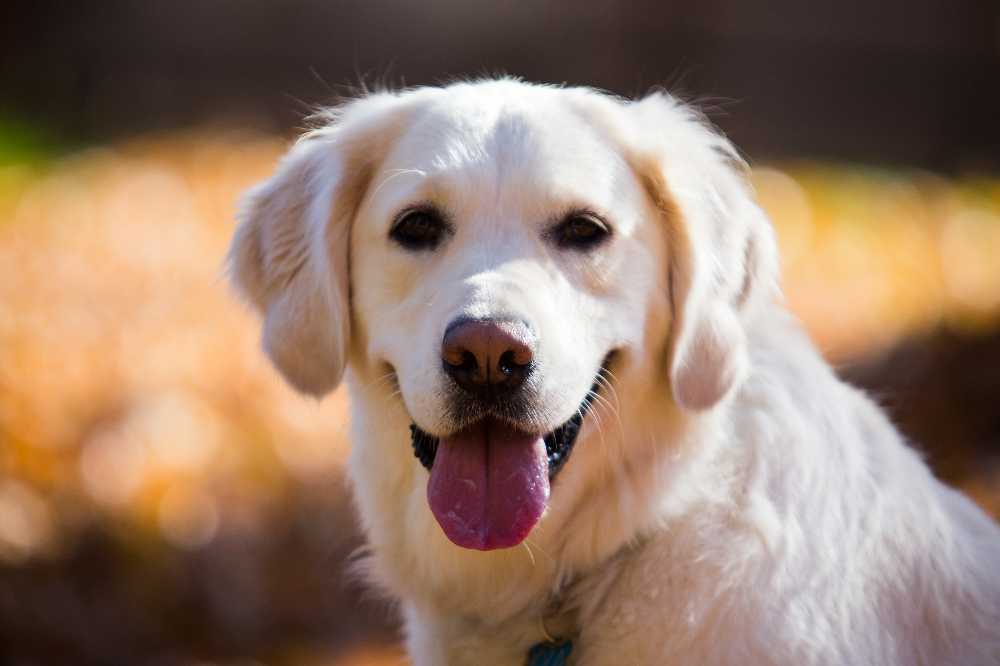

The Siberian Husky is a medium-sized working dog breed. The breed belongs to
the Spitz genetic family. It is recognizable by its thickly furred double coat, erect triangular
ears, and distinctive markings, and is smaller than a very
similar-looking dog, the Alaskan Malamute

Golden Retriever
The Golden Retriever is a medium-large gun dog that was bred to retrieve shot
waterfowl, such as ducks and upland game birds, during hunting and shooting parties. The name
"retriever" refers to the breed's ability to retrieve shot
game undamaged due to their soft mouth.
Shiba Inu
The Shiba Inu is a Japanese breed of hunting dog. A small-to-medium breed, it
is the smallest of the six original and distinct spitz breeds of dog native to Japan. A small,
alert and agile dog that copes very well with mountainous
terrain and hiking trails.